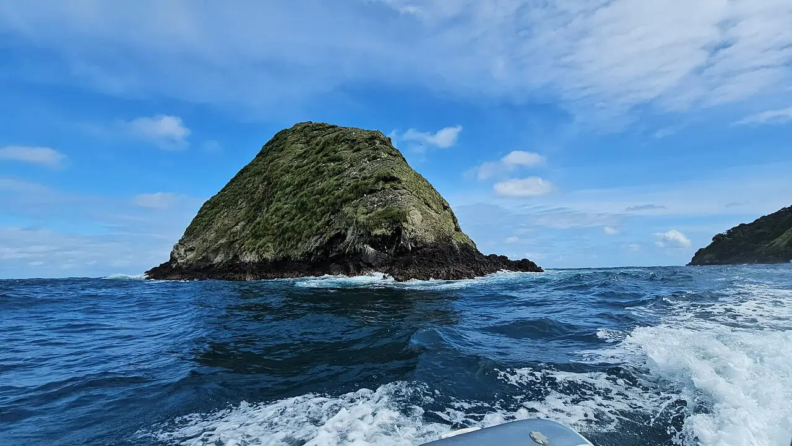

Isla del Coco
Puntarenas, Costa Rica · plongée

Île volcanique inhabitée à environ 550 km des côtes, parc national inscrit au patrimoine mondial. Elle n’est accessible qu’en croisière-plongée de plusieurs jours, pour des plongées réputées au milieu des bancs de requins-marteaux.
- Lieu
- Puntarenas, Costa Rica
- Niveau
- Expert
- Activités
- plongée
- Type d'eau
- Mer / océan
- Coordonnées
- 5.54, -87.06 (position approximative du secteur)
Dangers à connaître
- Courants forts, houle et descentes en pleine eau : réservé aux plongeurs expérimentés.
- Île très isolée : aucun caisson de recompression à proximité, une évacuation prend plus d’une journée.
Le conseil d'Ocean Buddy
Réserve longtemps à l’avance et arrive avec une vraie expérience des courants et de la plongée en pleine mer.
Ouvrir dans Ocean Buddy Télécharger sur l'App Store
Source : Fiche Ocean Buddy · septembre 2026 · à vérifier localement.